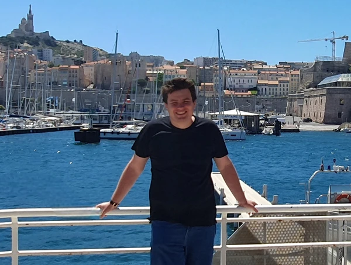

Jakob Hedicke

Currently I am a postdoctoral research fellow at the Centre de Recherches Mathématiques (CRM) and the Université de Montréal in the group of Octav Cornea and Egor Shelukhin.
Before I was a postdoctoral researcher at the Ruhr-Universität Bochum funded by the CRC/TRR 191 "Symplectic Structures in Geometry, Algebra and Dynamics".
In December 2021 I graduated my Ph.D under the supervision of Stefan Nemirovski and Stefan Suhr.
Research Interests
My main research interests are contact- and symplectic geometry and the interactions of these fields with differential topology, dynamics and pseudo-Riemannian geometry.
More specifically, I am interested in groups of contactomorphisms and the (non)-existence of invariant partial orders, metrics and other interesting structures on these groups. Moreover I am working on questions in low-dimensional contact topology and Reeb-dynamics using tools from differential topology such as open book decompositions. Further I am interested in the connections of contact- and symplectic geometry to pseudo-Riemannian geometry, in particular to Lorentzian geometry and questions in causality theory.
Preprints
10. (with E. Shelukhin) Non-orderability and the contact Hofer norm, arXiv preprint arXiv:2411.19887, 2024
9. (with K.-H. Neeb) Elliptic domains in Lie groups, arXiv preprint arXiv:2410.08083, 2024
8. (with D. Cant) On the rigidity of translated points, arXiv preprint arXiv:2409.08962 , 2024
7. (with D. Cant, E. Kilgore) Extensible positive loops and vanishing of symplectic cohomology, arXiv preprint arXiv:2311.18267, 2023
Publications
6. (with H. Geiges, M. Sağlam) Bott-integrable Reeb flows on 3-manifolds, to appear in: J. Lond. Math. Soc.
5. A causal characterization of $\mathrm{Sp}_{\mathrm{ell}}^+(2n)$ , to appear in: Commun. Contemp. Math., doi: 10.1142/S0219199723500402
4. Lorentzian distance functions in contact geometry, J. Topol. Anal. 16:02, 205-225, 2024
3. (with E. Minguzzi, B. Schinnerl, R. Steinbauer, S. Suhr) Causal simplicity and (maximal) null pseudoconvexity, Classical Quantum Gravity (Note) 38, 22, 227002.
2. The contact structure on the space of null geodesics of causally simple spacetimes, Differential Geom. Appl., 75 (2021), Article 101715.
1. (with S. Suhr) Conformally embedded spacetimes and the space of null geodesics, Comm. Math. Phys. 375,(2020), 1561-1577.